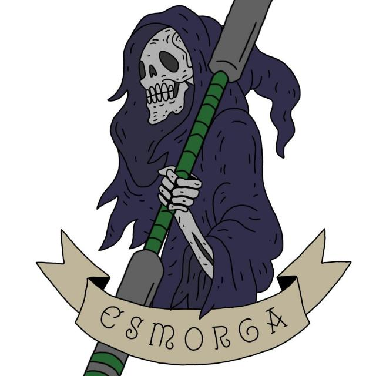

Somos un equipo creado hace 2 años,de la mano de Daniel Mora y Juan Lopez,originario de coruña.Este equipo nacio con un unico propósito derrotar y superar al equipo conocido como black cats,el equipo numero 1 de galicia.A lo largo de estos años no se puede decir que los hayamos superado,pero un seguimos entrenan y mejoran nuestras habilidades con el propocito de conseguirlo,todo esto siguiendo nuestra propia ideologia,la cual gira entorno de hacer bromas,reirnos y divertirnos lo maximo que podamos,mientras vamos escalando hasta el top 1. 
Como buen equipo oficial necesitabamos una equipación,y tras barajar diferentes opciones de diseños,decidimos obtar por representar nuestrro emblema "la santa compaña" los cuales se pueden observar en la parte tracera dirigiendose a una tumba.Este diseño fue realizado por Trillo. En cuanto a los colores originalmente nuestros colores representativos eran el verde y el morado,pero ya existia un equipo llamado "Esmorgates" que tenian esos colores,aparte de tener un nombre muy similar al nuestro. Luego pensamos en negro y morado,pero al ecistir demasiados equipos donde su color principal era el negro,y preveer que en los partidos nos pedirian cambiarnos la camisa para no confundirnos,decidimos inertir los colores y dejarlo en morado y negro.
Todo deporte debe de tener sus propios torneos y competencias,ya Jugger no es la excepción,por cada estacion se realiza un torneos ,aparte de otros torneos mas importantes con la "Atum" o el "Mundi",y es estos 2 años de la existencia Esmorga a participado en muchos de estos,destacando los siguientes:
summer 2023
Atum
Mundi
La winter 2022
La winter de 2023